행사
Catholic Surgical Symposium
Catholic Surgical Symposium(CSS)은 외과학교실이 여는 학술행사입니다. 외과의사가 임상에서 자주 만나는 상황의 기본 지식, 주요 수술의 최신 지견, 교실 교수진의 연구 성과를 함께 나눕니다. 2015–2019년에 열린 Catholic MIS Symposium(제1–4회)도 함께 실었습니다. 연도를 골라 프로그램과 사진을 볼 수 있습니다.
2026 Catholic Surgical Symposium
- 일시
- 2026년 2월 21일(토)
- 장소
- 서울성모병원 지하1층 대강당
- 프로그램
- Symposium I: The Next Chapter: Key Surgical Practices and Young Surgeons Across CMC
- 특별강연 I: 초고령화 사회에서 외과의 미래를 준비하며 (박병태, 가톨릭대학교 보건의료경영대학원)
- Plenary Session: Highlighting of Key Research by Faculty Members of This Year
- Symposium II: Surgical Critical Care: Principles, Practice, and Current Evidence
- 특별강연 II: I’m A Surgeon, 수술실 40년 그리고 그 이후 (문인성, 가톨릭의대 명예교수)
- Video Session: The Most Interesting and Challenging Cases of the Year
- 시상식: 우수논문상, 우수비디오상
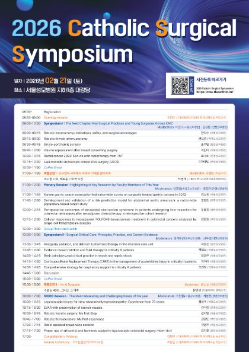
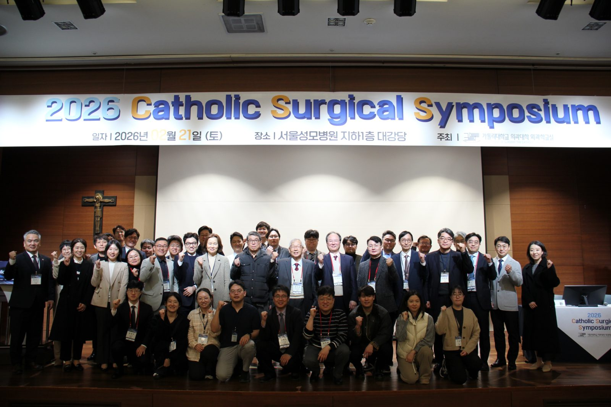
 개회사 (조현민 주임교수)
개회사 (조현민 주임교수)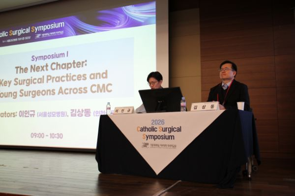
Symposium I (좌장 이인규·김상동) Symposium I 발표
Symposium I 발표 휴식 시간
휴식 시간 특별강연 I: 초고령화 사회에서 외과의 미래를 준비하며
특별강연 I: 초고령화 사회에서 외과의 미래를 준비하며 Plenary Session (좌장 백광열·황정기)
Plenary Session (좌장 백광열·황정기) Symposium II (좌장 김기환·선우영)
Symposium II (좌장 김기환·선우영) 특별강연 II: I’m a Surgeon (문인성 명예교수)
특별강연 II: I’m a Surgeon (문인성 명예교수) 특별강연 II
특별강연 II 시상식 (우수논문상·우수비디오상)
시상식 (우수논문상·우수비디오상)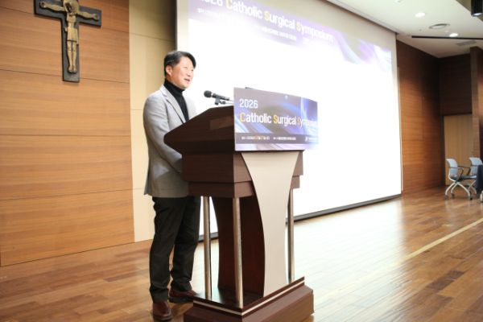
축사 (전병무 동문회장)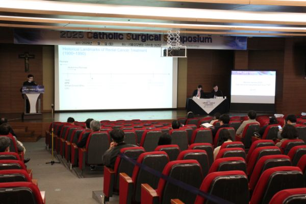
강연장


2025 Catholic Surgical Symposium
- 일시
- 2025년 2월 15일(토)
- 장소
- 가톨릭대학교 의과대학 성의회관 1층 마리아홀
- 프로그램
- Symposium I: Rediscovery of Fundamental Knowledge in Critical Surgical Conditions
- 특별강연 I (정년퇴임 기념): 대장암의 치료와 외과 교수로의 삶 (오승택, 의정부성모병원)
- Plenary Session: Top Research Publications by Faculty This Year
- Symposium II: Paradigm Shift and Cutting Edge of Major Surgical Disease
- 특별강연 II (정년퇴임 기념): Gastrointestinal Surgery: Arena (진형민, 성빈센트병원)
- Video Session: Most Interesting and Challenging Cases of the Year
- 시상식: 우수논문상, 우수비디오상
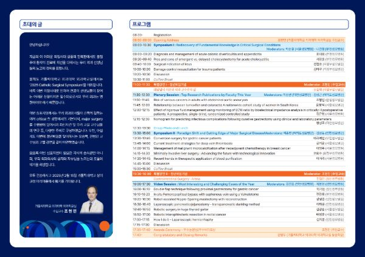

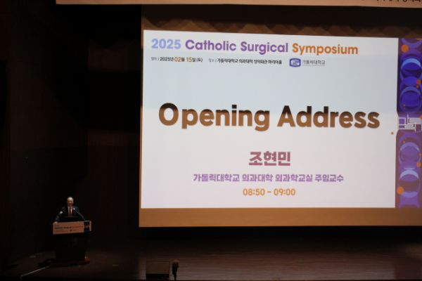
개회사 (조현민 주임교수)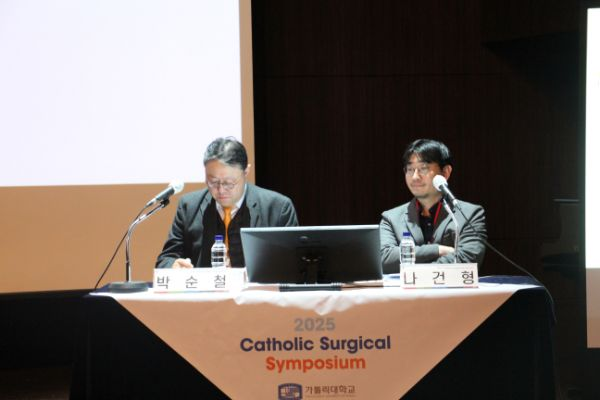
Symposium I (좌장 박순철·나건형) Symposium I 발표
Symposium I 발표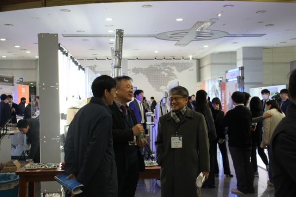
휴식 시간 특별강연 I 정년퇴임 기념: 대장암의 치료와 외과 교수로의 삶 (오승택 교수)
특별강연 I 정년퇴임 기념: 대장암의 치료와 외과 교수로의 삶 (오승택 교수)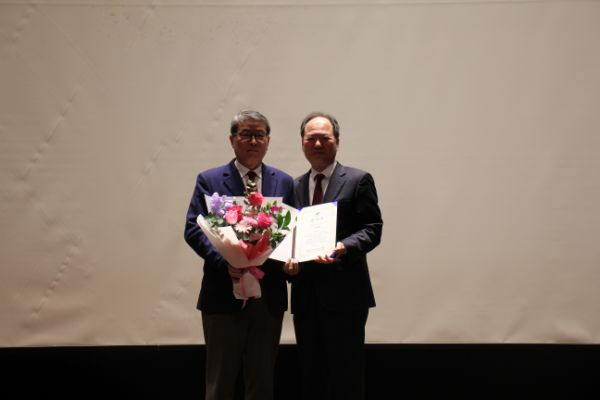
특별강연 I 정년퇴임 기념 Plenary Session (좌장 이상권·김성근)
Plenary Session (좌장 이상권·김성근)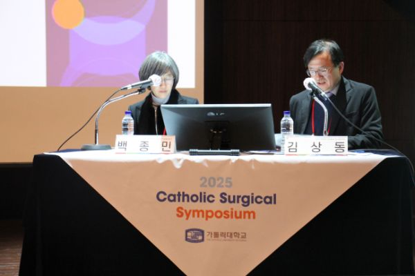
Symposium II (좌장 백종민·김상동)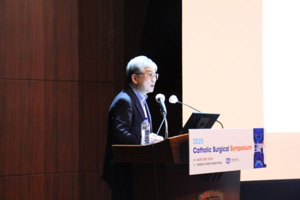
특별강연 II 정년퇴임 기념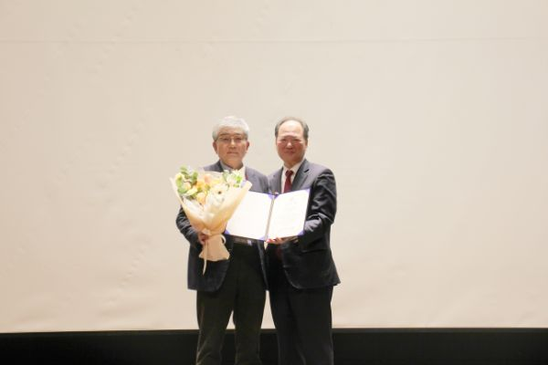
특별강연 II 정년퇴임 기념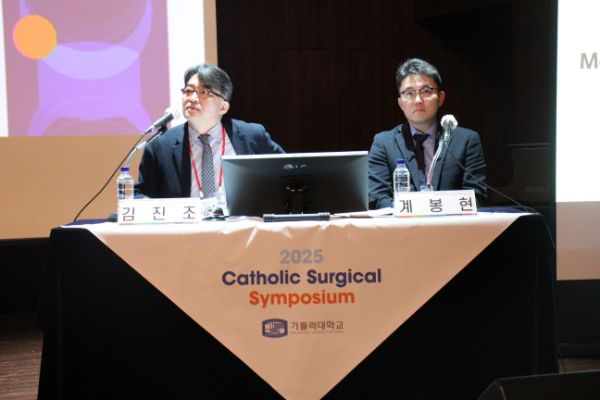
Video Session (좌장 김진조·계봉현)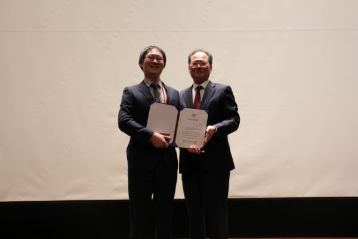
시상식 (우수논문상·우수비디오상)


2023 Catholic Surgical Symposium
- 일시
- 2023년 12월 9일(토)
- 장소
- 가톨릭대학교 서울성모병원 의생명산업연구원 1003호
- 프로그램
- Session 1: 고난도 수술 잘하기
- Session 2: 다양한 외과의사로서의 삶
- Session 3: 정맥류의 표준치료: 진단부터 청구까지

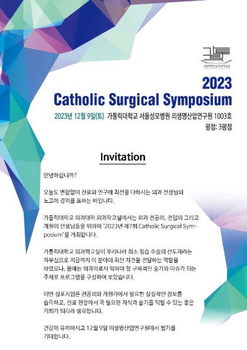

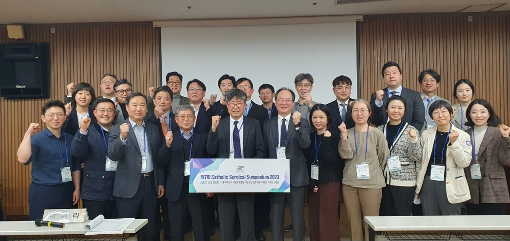
2022 Catholic Surgical Symposium
- 일시
- 2022년 11월 20일(일)
- 장소
- 가톨릭대학교 성의교정 옴니버스파크 로비층
- 프로그램
- Session 1: Procedural Safety, Towards Zero Complication
- Session 2: Single Topic Procedure Key Note – Acute Care Surgery
- Session 3: 전공의/전임의를 위한 수술 강좌
- Session 4: Video Session – Challenging Case Solution

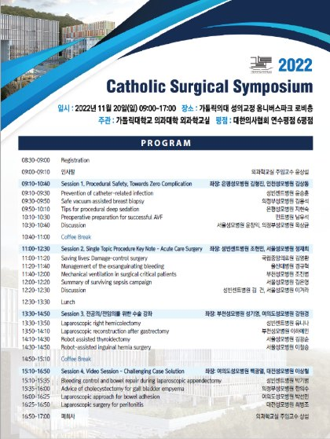
2021 제5회 Catholic Surgical Symposium
- 일시
- 2021년 10월 17일(일)
- 장소
- 은평성모병원(연자·좌장·패널), 온라인(청중)

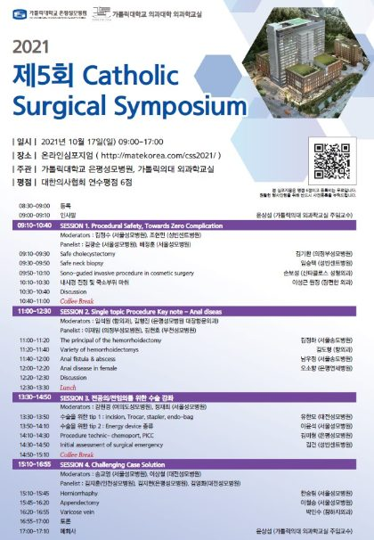


2019 제4회 Catholic MIS Symposium
- 일시
- 2019년 1월 27일(일)
- 장소
- 서울성모병원 지하1층 대강당


2017 제3회 Catholic MIS Symposium
- 일시
- 2017년 12월 16일(토) 08:30–16:10
- 장소
- 서울성모병원 지하1층 대강당, 세미나실

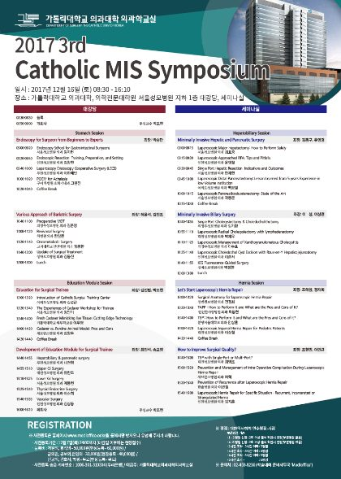
2016 제2회 Catholic MIS Symposium
- 일시
- 2016년 12월 10일(토)
- 장소
- 서울성모병원 의생명산업연구원 대강당, 1002호, 1003호
- 내용
- 김준기 교수 정년퇴임 기념 강연을 함께 열었습니다.

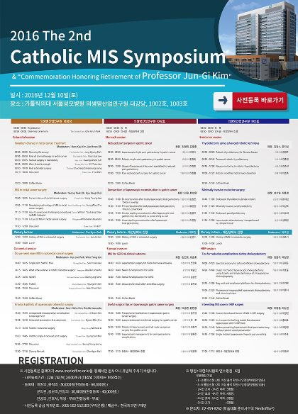
2015 제1회 Catholic MIS Symposium
- 일시
- 2015년 9월 20일(일)
- 장소
- 가톨릭대학교 의생명산업연구원
- 내용
- 상부위장관, 대장항문, 간담췌, 갑상선내분비 분야 최소침습수술의 최신 지견을 나누었고, 일본 Shizuoka Cancer Center의 Yusuke Kinugasa, Masanori Terashima 선생을 초청했습니다.

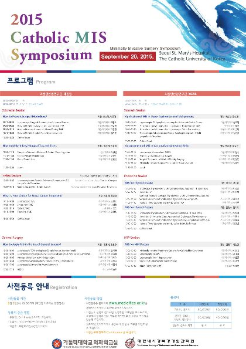